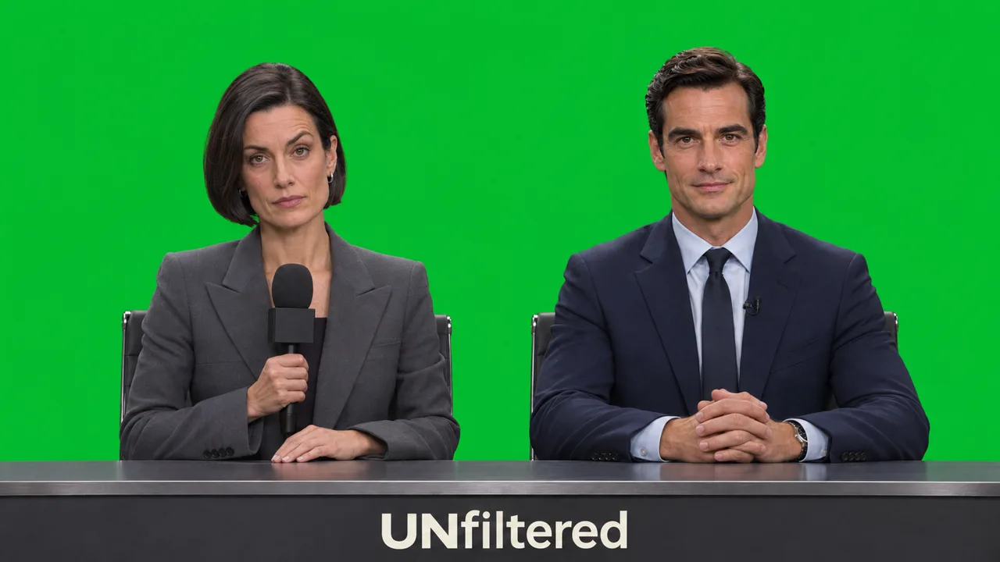
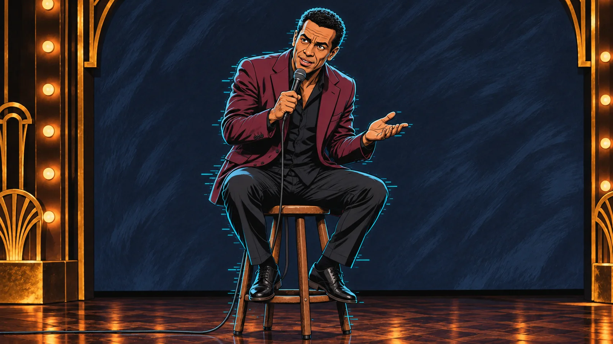

Diana
Reporter, co-host and the voice of Daily DE Grief. She has questions, experience and very little enthusiasm for another reassuring statement.
Satire · Characters · Animation
UNfiltered follows the people delivering the news, answering the calls and trying to keep the broadcast together.

At the desk
Caspian Vale brings the reassuring delivery. Diana brings a microphone, professional composure and a steadily dwindling supply of patience.
Reporter, co-host and the voice of Daily DE Grief. She has questions, experience and very little enthusiasm for another reassuring statement.
Charismatic, polished and perfectly at ease on camera. The Current always sounds better when Caspian reads it.
The UN Selective Outrage Center takes your call. Karen handles the concern. Tariq handles the technology. Reporting may take longer.

In development
Desk banter, caller skits, field reports and stand-up interruptions share one evolving world.
Character studies, painted environments and storyboard sequences are shaping the animation and the UNSoC call-center sandbox.
Inside the creative process